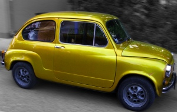
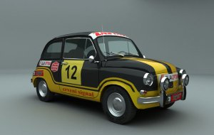
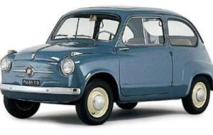

NACIONAL CLASS!
This once-very popular car in the period of the SFRJ, celebrated its 60th birthday on the plateau of the Museum on May 25th. On September 27, fans of this model gathered for the fourth time.
The event started at 10 am and was aimed at preserving the memory of our cultural and industrial heritage. We also had guests from Germany, Austria, Croatia, Slovenia, Bosnia and Herzegovina, Macedonia and all parts of Serbia.
The participants were surrounded by positive energy, exchanging stories and memories of how in the era of Yugoslavia, Fića was the most prominent car on the streets. Some of the owners of their loved ones drive on a daily basis while some of them only travel to the gathering and for some of them special occasions.
Fića (Zastava 600, 750, 850) car produced in Kragujevac from the fifties of the 20th century under the license of the Italian FIAT. It became an unavoidable mark of Yugoslavia for cars.